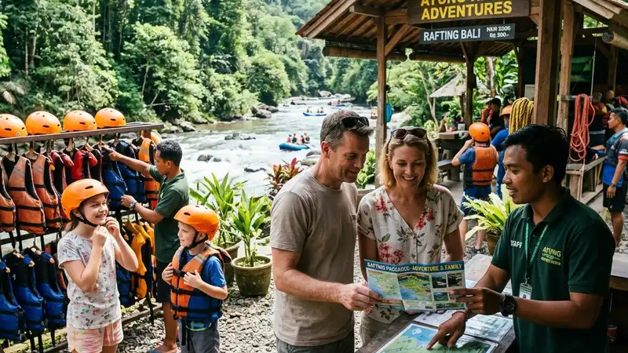

Paket rafting keluarga yang aman untuk anak dipilih berdasarkan legalitas operator, rasio pemandu terhadap peserta, kesesuaian grade jeram dengan usia anak, dan kelengkapan perlengkapan keselamatan yang disediakan.
- Legalitas dan reputasi operator menjadi indikator awal keamanan paket rafting keluarga.
- Rasio pemandu terhadap peserta memengaruhi tingkat pengawasan selama kegiatan berlangsung.
- Kesesuaian grade jeram dengan usia dan kondisi fisik anak wajib menjadi pertimbangan utama.
- Kejelasan komponen harga membantu keluarga menghindari biaya tambahan yang tidak terduga.
- Mengajukan pertanyaan spesifik kepada operator sebelum memesan dapat mencegah kesalahpahaman di lokasi.
Apa Saja yang Perlu Diperhatikan Sebelum Memesan Paket Rafting Keluarga?
Hal yang perlu diperhatikan sebelum memesan paket rafting keluarga meliputi legalitas operator, kejelasan komponen harga, kesesuaian jalur dengan usia anak, dan ketersediaan perlengkapan keselamatan berukuran anak.
Sebelum melakukan pemesanan, keluarga sebaiknya memastikan operator memiliki izin usaha resmi dan idealnya tergabung dalam asosiasi wisata arung jeram setempat. Selain itu, penting untuk memahami secara rinci apa saja yang termasuk dalam harga paket, seperti perlengkapan keselamatan, jasa pemandu, dokumentasi, dan transportasi, agar tidak ada biaya tambahan yang muncul secara tiba-tiba di lokasi.
Bagaimana Cara Memastikan Paket Rafting Keluarga Aman untuk Anak?
Cara memastikan paket rafting keluarga aman untuk anak adalah dengan menanyakan langsung kebijakan usia minimal, rasio pemandu, dan ketersediaan perlengkapan keselamatan berukuran anak sebelum melakukan pemesanan.
Orang tua dapat menghubungi operator melalui kontak resmi untuk menanyakan detail seperti pengalaman pemandu dalam menangani peserta anak, prosedur darurat yang diterapkan, serta kebijakan pembatalan atau penjadwalan ulang apabila kondisi cuaca tidak mendukung. Semakin transparan operator dalam menjawab pertanyaan-pertanyaan tersebut, semakin besar tingkat kepercayaan yang dapat diberikan keluarga terhadap layanan mereka.
Apa Saja Pertanyaan yang Perlu Diajukan kepada Operator Sebelum Memesan?
Pertanyaan penting yang perlu diajukan kepada operator meliputi kebijakan usia minimal, rasio pemandu terhadap peserta, komponen yang termasuk dalam harga paket, dan prosedur darurat yang diterapkan selama kegiatan.
- Berapa usia dan berat badan minimal peserta anak yang diperbolehkan mengikuti kegiatan.
- Berapa rasio jumlah pemandu dibandingkan jumlah peserta dalam satu kelompok.
- Apa saja yang termasuk dalam harga paket, termasuk perlengkapan dan dokumentasi.
- Bagaimana prosedur yang diterapkan apabila cuaca berubah mendadak saat kegiatan berlangsung.
- Apakah tersedia asuransi dasar bagi peserta selama mengikuti kegiatan rafting.
Apa Saja yang Termasuk dalam Paket Rafting Keluarga pada Umumnya?
Paket rafting keluarga pada umumnya mencakup sewa perahu karet, perlengkapan keselamatan seperti pelampung dan helm, jasa pemandu, briefing keselamatan, serta dokumentasi kegiatan dalam bentuk foto atau video.
Beberapa operator juga menambahkan fasilitas tambahan seperti transportasi antar-jemput dari titik kumpul, makan siang, serta sertifikat kegiatan sebagai kenang-kenangan. Komponen tambahan ini biasanya memengaruhi selisih harga antar paket, sehingga keluarga perlu membandingkan secara cermat sebelum memutuskan paket mana yang paling sesuai dengan kebutuhan dan anggaran.
Secara umum, tren permintaan paket wisata air yang menyertakan fasilitas dokumentasi dan transportasi antar-jemput meningkat pada periode 2023-2025, seiring dengan semakin banyaknya keluarga yang mencari pengalaman wisata praktis tanpa perlu mengatur logistik secara mandiri.
Bagi keluarga yang ingin mempelajari lebih dalam mengenai persiapan anak sebelum rafting, artikel rafting anak memberikan panduan lengkap terkait usia dan perlengkapan. Rekomendasi destinasi yang sesuai dapat dibaca pada artikel wisata rafting anak, sedangkan gambaran menyeluruh tentang konsep kegiatan ini tersedia pada artikel rafting keluarga.
FAQ
Apakah harga paket rafting keluarga sudah termasuk asuransi?
Sebagian operator menyertakan asuransi dasar dalam harga paket, namun hal ini perlu dikonfirmasi langsung karena kebijakan setiap operator dapat berbeda.
Apakah bisa membatalkan atau menjadwalkan ulang paket rafting keluarga?
Sebagian besar operator menyediakan opsi penjadwalan ulang, terutama jika pembatalan disebabkan oleh kondisi cuaca yang tidak mendukung keselamatan kegiatan.
Apakah paket rafting keluarga bisa disesuaikan untuk rombongan besar?
Banyak operator menawarkan penyesuaian paket untuk rombongan besar, termasuk penambahan jumlah pemandu sesuai jumlah peserta dalam kelompok.
Arya
Penulis artikel yang sudah berpengalaman di dalam dunia wisata outbound Batu Malang.